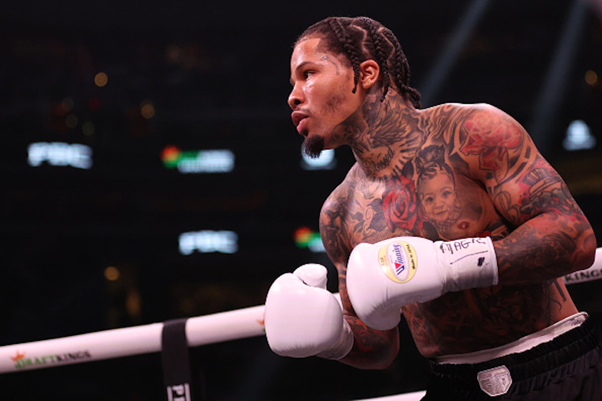

Boxuji od svých 8 let. Tento sport mě naučil disciplíně, vytrvalosti a respektu k sobě i soupeři. Je to skvělý způsob, jak si udržet kondici a posilovat nejen tělo, ale i mysl.
Gervonta Davis
Gervonta Davis je americký profesionální boxer, známý svou neuvěřitelnou silou a rychlostí. Stal se více než jednou šampionem v lehké váze a je považován za jednoho z nejlepších mladých boxerů současnosti. Jeho agresivní styl a schopnost ukončit zápas KO dělají z jeho zápasů skutečnou podívanou.
Více o Gervontovi najdeš na jeho wikipedii nebo na jeho Instagramu.